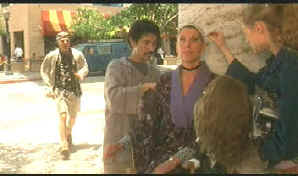

|
Bowfinger(SE)/B,A-
|
| Universal/1999/97/ANA
1.85 |
Steve Martin wrote the script and stars in Bowfinger, an
irreverent and likeable comedy that throws its spears at
Hollywood with gleeful abandon. Bobby Bowfinger is a movie
producer working out of a dilapidated house bearing the logo of
Bowfinger International Pictures. Failure is stamped over every
aspect of Bowfinger’s career. He’s fast approaching fifty
and he sees the end of the Hollywood road moving toward him
faster than speeding freeway traffic. A last-ditch inspiration
inspires Bowfinger to round up his desperate crew of moviemakers
for one last daring attempt to grab the brass-coated ring from
the filmmaking merry-go-round.
|
 |
| Kit's
ready for you Carol. ©Universal |
After the recent success with In and Out, Frank Oz
returns to the director’s chair with Bowfinger. Oz
knows comedy so well and has worked with star Martin brilliantly
before in Dirty Rotten Scoundrels. The set-up for Bowfinger
is quite good, making a movie
without the knowledge of its star under the guidance of a
conniving and desperate Hollywood peripheral. The chaotic nature
of Bowfinger instills it with vigor but tarnishes some of
the polish. Some of Martin’s silliness in abandoning character
logic for easy comedy hurts Bowfinger. Considering
Bowfinger’s ingenuity, there are things he does that don’t
make character sense and undermine the level of comedy.
Bowfinger is one of those films
that is funny to watch and continually enjoyable, but you
realize it fails to live up to its potential. Some of the satire
is far too easy, leaning toward farce. It blunts the edge. Bowfinger
derives its humor from variations on the same theme and while it
is mostly funny, there’s a repetitive sense that prevents the
film from taking off with vertical hilarity.
Martin is on cruise-control as Bobby
Bowfinger. As the writer, he knows the character very well.
The actor's comic presence works for him most of the time. There
are always levels of Martin's silliness in the films he makes,
and when, like in Three Amigos, it calls for him to trip
over himself, the silliness works well, but in Bowfinger
a little more edge might have made Bowfinger a sharper
comic experience. Eddie Murphy lets Kit Ramsey display his warts
and fangs with unfettered glee. But
the twin Murphy characters, Kit and brother Jiff, are not
equally funny creations. Kit, admittedly, is an easy satire and
Murphy has an easy time poking fun at this character, but the
sweet and innocent Jiff is another task altogether. Jiff is not
a ready target with his sweet screen persona, some any humor
stabs at him are rather acid. Maybe the filmmakers fail to go at
Jiff full throttle and that’s the problem. It’s hard to put
your finger on it, but Jiff ultimately falls flat.
Christine Baranski has a lot of fun
making Carol, the aging stage actress, a ham-full delight.
Heather Graham waives her arms a lot as Daisy, the newly arrived
Ohio girl ready to do anything to move up the Bowfinger
ladder. The rest of the supporting players capture the spirit of
an Ed Wood company of players.
Watching
the out-takes might be a good indication of how much fun these
actors had making Bowfinger. The several clips are funny
and provide insight into the improvisational skills of Martin
and Murphy. Mostly, they are just plain fun and I wish they had
gone on longer. A few deleted scenes have been added as well.
With one short exception, these are variations on scenes already
in the film and while some good material has been lost, you can
easily see why the director made his choices. The spotlight on
location feature is entertaining and contains comments from all
of the principal members of the cast.
Oz
is comfortable giving the actors’ credit for their
improvisational skills in the audio commentary. Oz is a
comfortable speaker and presents an even-minded evaluation of
what we are seeing. You can here Oz’s confidence in the
editing process. He likes alternatives to make choices because
he’s not always sure what is funny. Oz provides detail about
how reshoots help define the movie with better clarity. After
three months, the team realized they needed more explanation in
a scene, and, voila, back to the set. Meticulous detail
recording makes it all possible. Will you enjoy the freeway
scene more or less knowing that Murphy actually runs across that
freeway, but the cars have been added digitally. Oz enjoys
sharing that information. There’s a lot to learn about the
filmmaking process from the Oz commentary.
Universal delivers Bowfinger in
an excellent special editon. Everything is in comfortable focus
and background details add texture to the comedy. Interiors
capture the varied lighting touches of cinematographer Ueli
Steiger. Colors are bold and accurately reproduced. There's
plenty of light output for every display device. Contrast is
strong. The layer change pause freezes momentarily. Sound is
handled ably in both Dolby Digital 5:1 and DTS. The
sound mix is most effective in embellishing Eddie Murphy's dash
across the freeway, but otherwise, it's not an especially
aggressive. |
The
Feature
Archive has articles
ranging from A
Western is a Western is a Western to Screen
Voices, The
Heistmasters, Akira
Kurosawa, film preservationist Robert
Harris and Shawshank Redemption director Frank
Darabont.

Catch the Hollywood take on Blonde Bimbos by clicking on the
image above.
Check out the Movie
Poster Archive for
short bios and images of Susan Hayward, Kirk Douglas, Katharine
Hepburn and many more. This month's featured star is Clark
Gable.

More
than just talk, one of the friendly and helpful places on the
web where home theater views are exchanged. You might find a
laugh or two as well.
Imaging
Science Foundation
The Imaging Science
Foundation promotes proper standards in home theater viewing.
ISF trained technicians offer monitor calibration services to
consumers. The difference in a properly calibrated monitor
can be astounding. Click on the image to find an ISF member near
you.
HOT
LINKS
DVD
Verdict
They may be
judgmental, but that's the point, isn't it. Lots of DVD reviews
plus news and more
The
Home Theater Forum
Looking for lively and
helpful exchanges on home theater, DVD, movies. Visit this
friendly site and get a hardy welcome.
Home Theater
Reference Reviewing System

When you read a DVD review it's of
utmost importance to know what equipment is being used to
evaluate quality. Click on the projectors to find out more.
|